In this project, our group disassembled a computer to fully understand the different components of an computer. All images below are components of the computer our group members disassembled.
Here’s an image of the computer before we disassembled it:
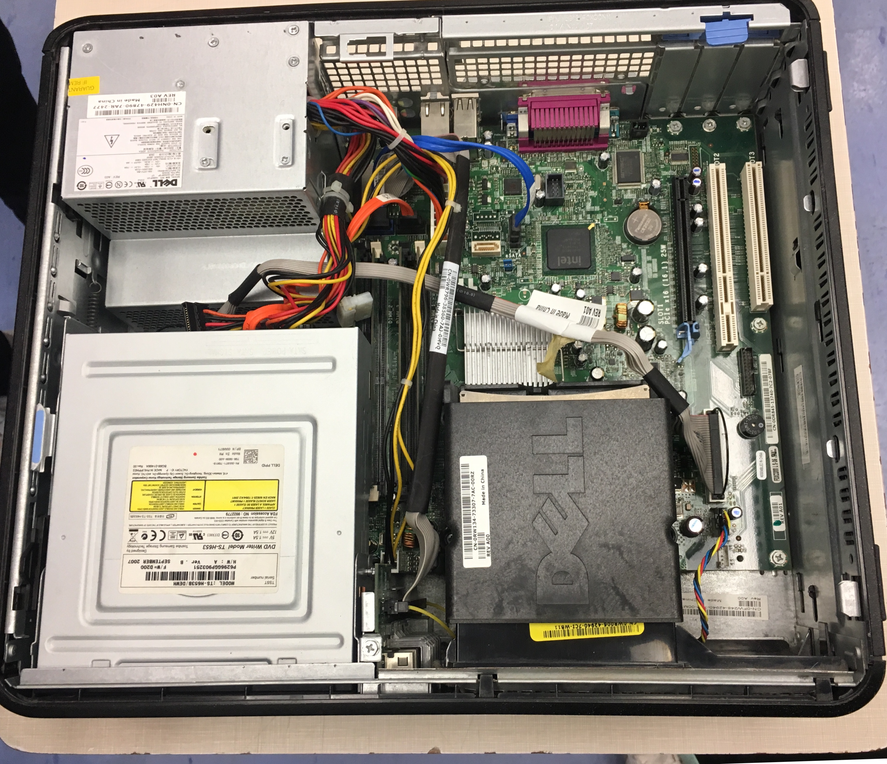Here’s an image of the case when we took out everything:
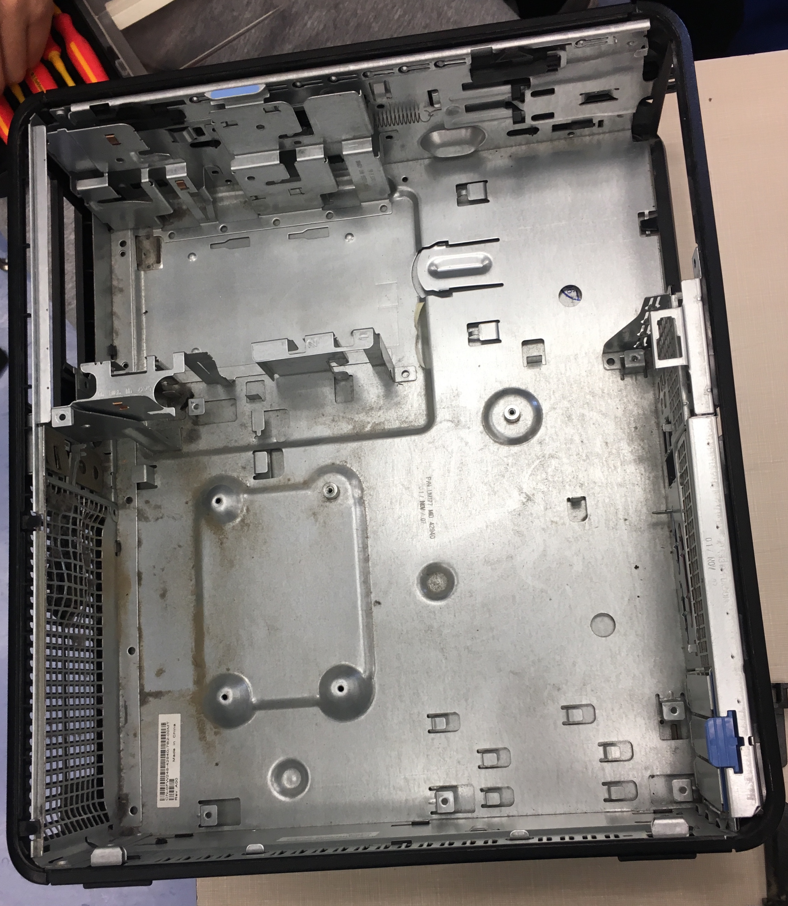Here's an image of the computer after we reassembled it:
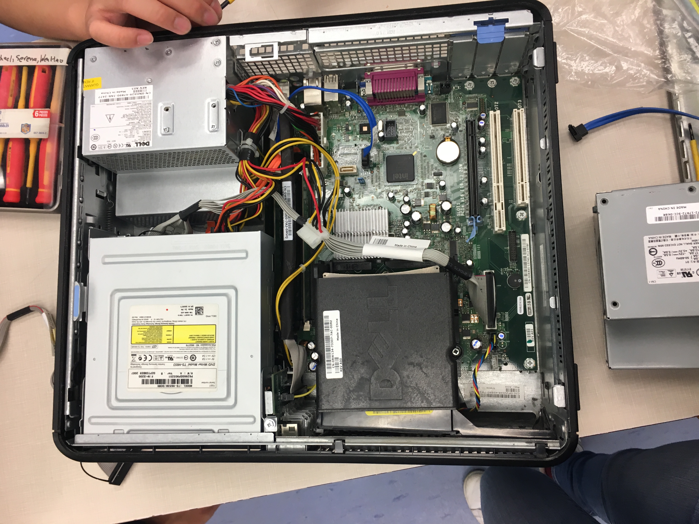The motherboard is the primary circuit board inside the System Unit. All components, inside and out, connect through the motherboard in some way. They're designed to connect all parts of the computer together. The Read-Only Memory (ROM) is a type of non-volatile memory that usually contains the operating system(Programs which tells a computer how to perform its most basic tasks, such as “reading” information from input devices, “writing” information to output devices, launching application software, and executing the instructions of launched software.) for the computer while booting (a process when computers load its operating system into primary storage). Expansion slots are slots where you can add extra video cards, network cards, printer ports, TV receivers and many other custom additions to the motherboard. Removable components designed to fit into expansion slots are called cards, due to their flat, card-like structure. The sound card is an expansion card that allows the computer to send audio information to an audio device, like speakers, a pair of headphones, etc.
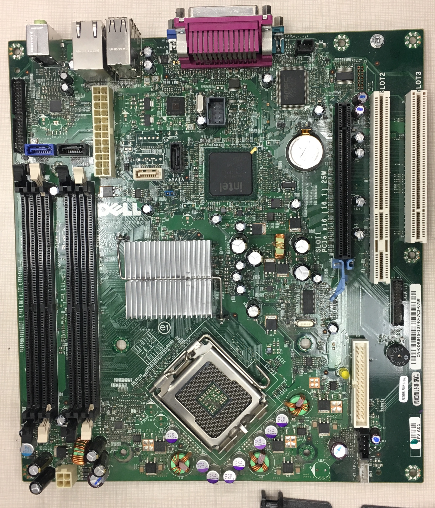Most of the hardware and software rely on the CPU to process data or perform a function. It acts like the brain of the system unit, as it processes data from the input devices and send the processed information to the output devices. Without the CPU, the computer would not be able to function properly. The faster/better the CPU of a computer is, the faster the computer is.The video card is an expansion card that allows the computer to send graphical information to a video display device such as a monitor, TV, or projector.
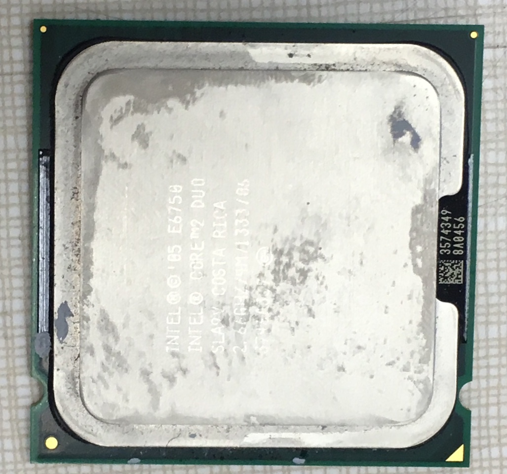It stores the information that is being processed. It extracts the original information from the hard disk or another source of data and stores it for using it in the different softwares later.
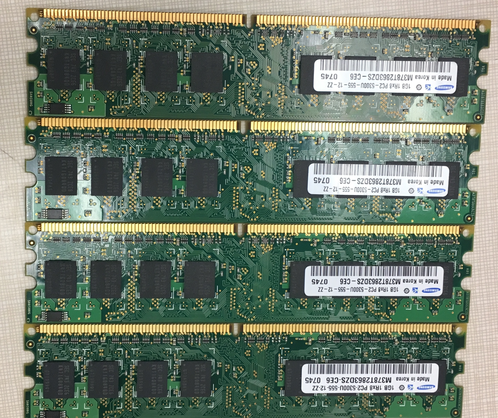The case contains all the components of a system unit. It protects the components from harm (e.g. dust and force) and simplifies what the user has to know to use the computer. Often the case is made to make the computers aesthetically pleasing to look at.
The power supply connects to some type of power source (a power outlet for desktop PCs). Then, the various cables are connected to different parts of the computer. Some of these cables connect directly to the motherboard, while others connect to other components like drives and fans.
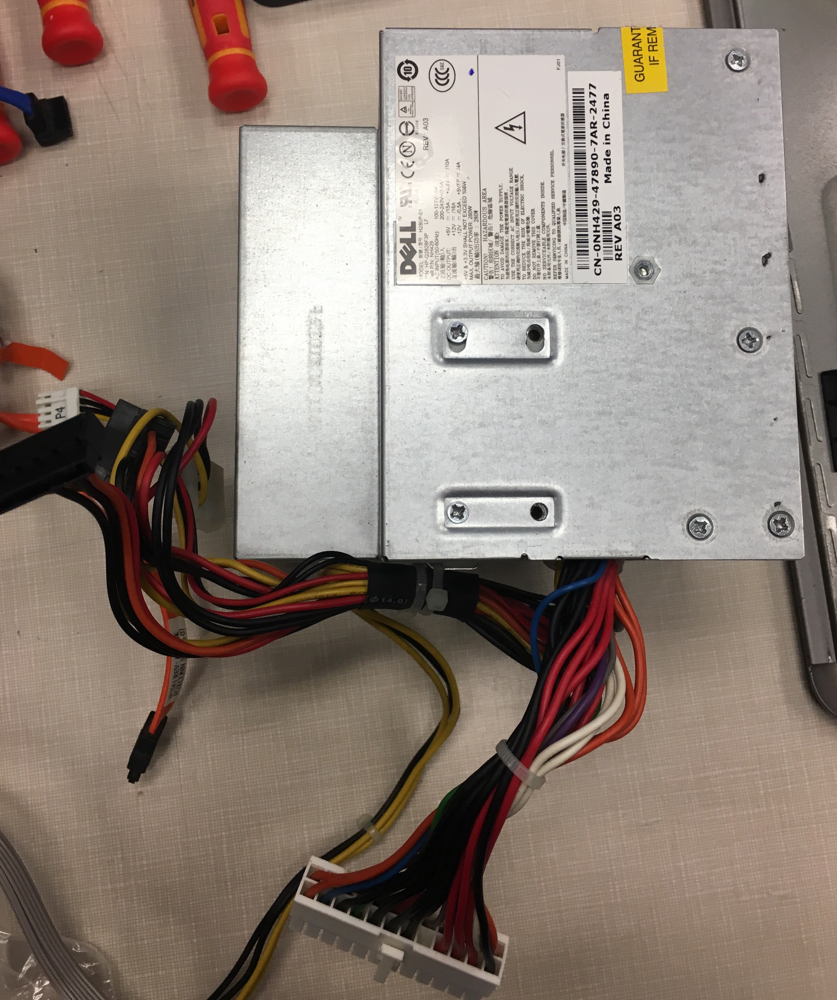The floppy disk drive is an optical disc drive that reads and writes on a floppy disc. The floppy disc inserted can act as a data source or a place for information storage.
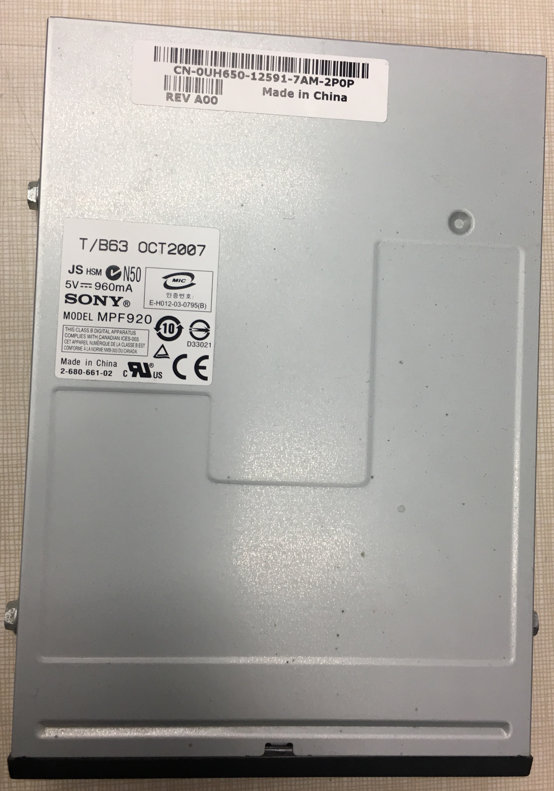The hard disk is a set of stacked disks, like phonograph records. Each disk has data recorded electromagnetically in concentric circles, or tracks, on the disk. The hard disk can act as a data source or a place for information storage, however it is different than a floppy disk or a CD/DVD because it is inside the computer (harder/more difficult to remove). Data stored in the hard disk doesn’t get lost (contrasts with the RAM since it loses all its stored data) when the computer is shut down, and the extraction of data is slower than the RAM.
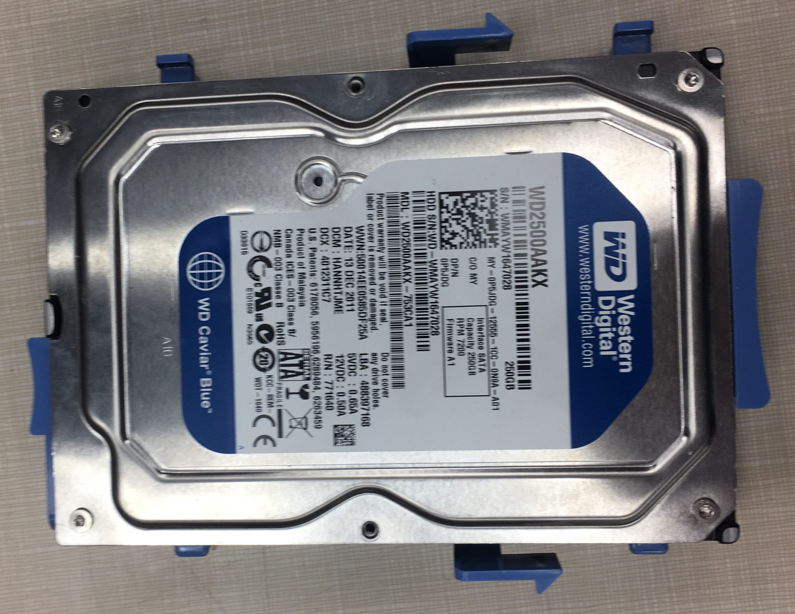The CD-ROM drive is an optical disc drive that reads and writes all common CD and DVD formats. The CD/DVD disc inserted can act as a data source or a place for information storage.
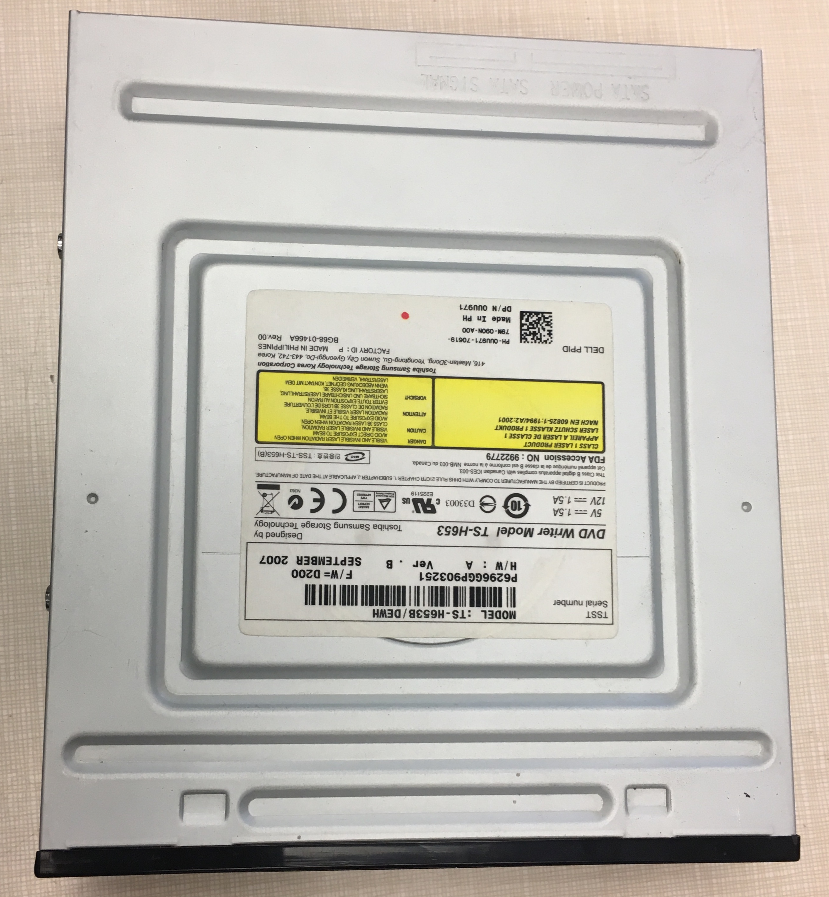The more your computer processes, the more heat it generates. The CPU and other components can handle a certain amount of heat. However, if a PC isn't cooled properly, it can overheat, causing costly damage to its components and circuitry. This metallic block situated above the CPU is called a heat sink, which draws heat away from the CPU.
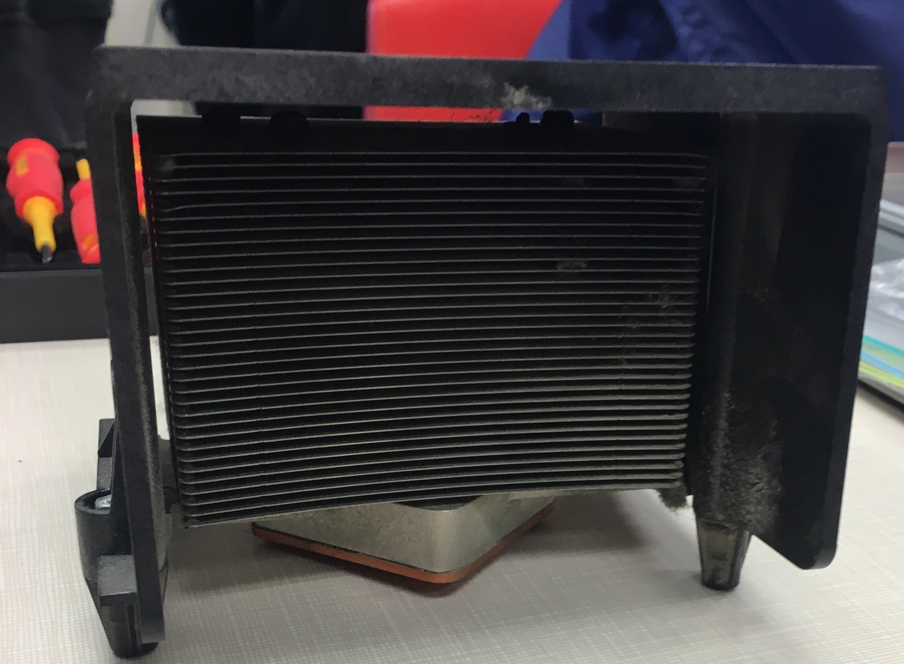Fans are the most common device used to cool a PC. It uses wind to cool the heating computer.
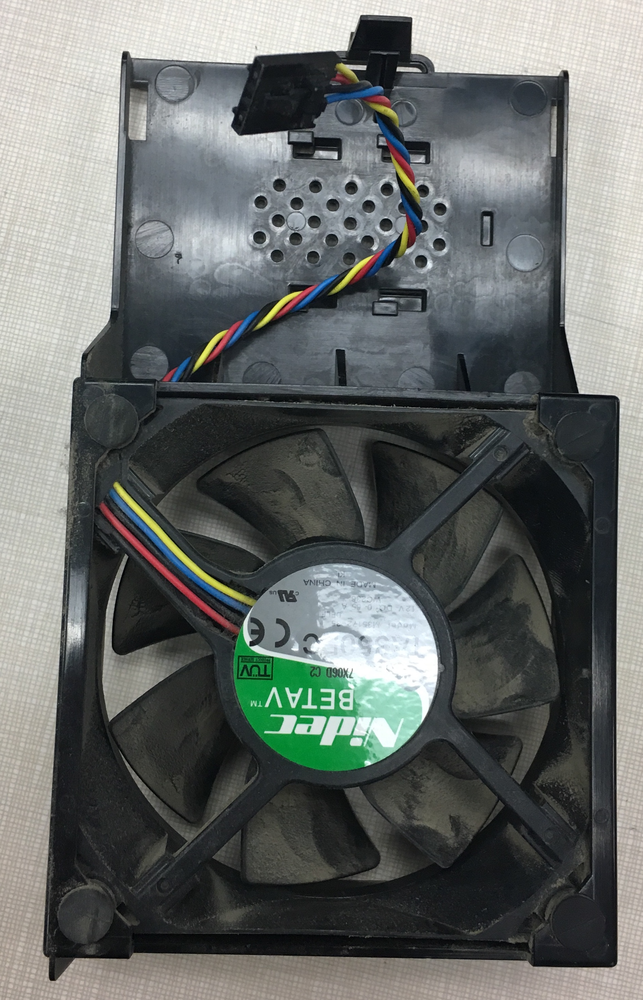Return to the top of the page.